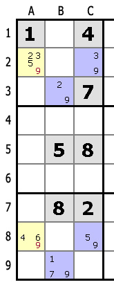

Терминология судоку
Клетка: Основной элемент судоку. Все клетки должны быть заполнены цифрами от 1 до 9. Каждая из клеток входит одновременно в ряд, колонку и область.Группа: Групп несколько: ряд — 9 горизонтальных клеток; колонка — 9 вертикальных клеток; область — малый квадрат размером 3×3 клетки. В каждом судоку 9 областей.
Сегмент: Часть области — 3 горизонтальных или вертикальных клетки. В каждой области 6 сегментов — частей большого ряда или колонки.
Кандидаты: Цифры, которые могут быть вписаны в клетку (на рисунке — мелким шрифтом). Когда все кандидаты, кроме одного, вычеркнуты, цифру можно вносить «на постоянной основе». Два кандидата — пара, три — трио, четыре — квартет.
Способы решения судоку
За годы существования судоку было разработано множество подходов к решению. Мы предлагаем несколько методов, от простого — к сложному.1. Синглы (единственные варианты)
Синглы определяются после исключения цифр, которые уже вписаны в ряды, колонки или области. Таким способом решают простые судоку.1.1. Очевидные синглы
Если путем исключения можно выявить единственно возможное число, сингл называют очевидным.
Цифры 1, 5, 6, 9 исключены — они есть в ряду.
2, 3, 8 — расположены в колонке.
6, 7, 8 — могут присутствовать в области.
Единственным кандидатом в клетке E6 остается 4.
1.2. Скрытые синглы
Число можно вписать в клетку, если другое расположение в группе невозможно. Определить такую вероятность можно после расстановки кандидатов и выявления цифры, которая больше нигде не повторяется.
В седьмом и девятом ряду 8 вписана изначально.
8 есть в колонке А.
В нижней левой области вписать 8 можно только в одну клетку — B8, поэтому остальных кандидатов нужно исключить.
2. Исключение кандидатов
Этот способ позволяет сократить число возможных кандидатов, чтобы потом можно было найти единственное правильное значение.2.1. Сегмент
Если удалось определить, что число может быть вписано в единственную клетку, его исключают из кандидатов в ряду, колонке и области.
В правой верхней области 6 должно находиться в сегментах G1 или H1 (других вариантов нет — второй ряд и третья колонка заняты), поэтому цифру можно исключит из кандидатов для клетки С1.
2.2. Сегмент 2

Если число может находиться только в одной области, его нужно исключить из кандидатов в других клетках.
Число 2 можно вписать в третий ряд второй области — D3 или E3. Поэтому 2 можно исключить из кандидатов в клетки первого и второго ряда этой области.
С учетом уже назначенных чисел третьего ряда, а также колонок B и H, число 2 может находиться только во второй области в третьем ряду и его можно исключить из D1, E1, E2 и F2.
3. Группы кандидатов
3.1. Очевидные группы кандидатовЕсли в группе кандидатов есть две клетки с одинаковыми парами, эти кандидаты не могут находиться в других клетках ряда, колонки или области.
Пара 1/4 (второй ряд) повторяется в клетках G2 и H2. Один из кандидатов обязательно расположится в G2, другой — в H2. Это значит, что 1 и 4 можно исключить из остальных клеток ряда.
Также пару 1/4 можно исключить из других клеток области.
В трех клетках группы не содержатся другие кандидаты, кроме трех, значит эти числа могут быть исключены из остальных клеток группы.
Три клетки группы не обязательно должны содержать все числа трио — в этих клетках не может быть других кандидатов.
Во втором ряду в клетках A, С и G имеется трио 1, 4, 6, значит, данные клетки обязательно разместят одну из этих цифр. Следовательно, 1, 4, 6 не могут занимать другое место в ряду, их присутствие можно исключить.
В клетках A и C встречается пара 4/6. Таким образом, остальных кандидатов из этих двух клеток можно исключить — в одной из клеток обязательно разместится 4, в другой 6.
Правило относится и к очевидным трио и квартетам, при этом клетки могут не содержать все числа из трио или квартета. Рассмотреть скрытые трио и, тем более, квартеты сложно, но встречаются они нечасто.
4. Сложные методы
Сложность этих методов относится не к пониманию их сути, а к применению в решении судоку.4.1. Связанные пары (бабочка)
Если число возможно только в двух ячейках двух рядов (4 варианта), расположены они в двух колонках и формируют прямоугольник, кандидат может быть исключен из других клеток колонки.
В переносе на колонки метод формулируется аналогично, но тогда нужно исключить кандидатов в рядах.
Например, цифра 9 для колонок B и H может находиться только во втором и восьмом рядах (фиолетовые клетки). Из остальных клеток этих рядов 9 можно исключить.
Рассмотрим колонку B. Если 9 не в B2, она может быть только в B8, для колонки H — наоборот. То есть, варианты расположения 9: B2 и H8 или B8 и H2, из остальных клеток этих рядов девятку можно исключить. Метод применим и к областям.

Этот метод может применяться к областям:
В колонках B и C цифра 9 может находиться в ячейках B3, B9, C2 и C8.
Поскольку B3 и C2, B9 и C8 находятся внутри одной области, 9 может быть исключена из остальных клеток этих двух областей.
4.2. Сложносвязанные пары (рыба)
Метод похож на предыдущий, но сложнее. Его применяют, когда один из кандидатов присутствует в трех рядах (не более) и при этом — в одних и тех же трех колонках.
Из остальных рядов этих трех колонок кандидата можно исключить. Аналогично метод применяется к трем колонкам, тогда кандидаты исключаются из рядов:
2 встречается только в двух клетках колонок C, F и H. Эти клетки находятся в трех рядах — втором, четвертом и восьмом:
Второй ряд. 2 может быть только в F2 или в H2,
Четвертый ряд: C4 или H4.
Восьмой ряд: C8 или F8.
Из остальных клеток этих рядов 2 можно исключить.
4.3. Связанные кандидаты
Кандидаты связаны, если число возможно только в двух клетках группы, ряда, колонки или области. Если один кандидат подтвердился, второй отпадает.
Когда несколько пар связанных кандидатов соединены, число можно исключить из других клеток — число в них не появится в любом случае.
В колонке B число 7 может находиться B2 или B4.
Аналогично в первом ряду C1 и H1 — если один кандидат верен, то другой нет.
Эти связи кандидатов объединены в первой области.
Если 7 находится в B4, ее можно исключить из H1. Если она не в B4, тогда в B2. Если не находится в C1, тогда в H1, но не в H7.
В любом случае 7 не может находиться в H1.
4.4. Цепочки
Метод используется, когда во многих клетках только два кандидата. Выбирая одного в начальной клетке, вы формируете цепочку выборов, которая приводит к удалению кандидата из какой-либо клетки.
Если при выборе другого кандидата в начальной клетке вы приходите к удалению того же кандидата, он может быть удален.
Например, если 3 верно в клетке B2, то выполняется цепочка заключений (красная линия):
B2 — 3, D2 — 5, E3 — 7, E5 — 8, A5 — 5, таким образом 5 не находится в A4.
Если же в B2 находится 2, тогда мы имеем (зеленая линия):
< B2 — 2, B4 — 5 и опять 5 не находится в A4.
В любом случае кандидат 5 может быть исключен из клетки A4.
5. Предположения
Иногда вышеперечисленные методы не помогают продвинуться в решении. Тогда можно выбрать кандидата в клетке и посмотреть, к чему приведет такой выбор. Если рассуждения заканчиваются тупиком, тогда придется вернуться в начало и попробовать другой вариант.Этот метод ближе к гаданию на кофейной гуще и обычно не используется при решении судоку.
Решить!